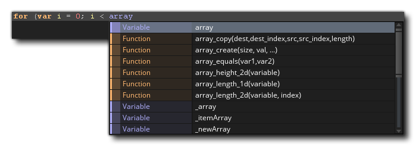

Vous pouvez utiliser du code à plusieurs endroits dans GameMaker Studio 2, depuis des objets, des salles, des instances, et de nombreuses fonctions intégrées vous simplifient la vie lorsque vous programmez avec GML ou Drag and Drop. Cependant, il est souvent nécessaire de créer vos propres fonctions pour effectuer une tâche spécifique, ou de condenser une grande partie du code en un bloc plus gérable, voire même de pouvoir réutiliser un bloc de code particulier à différents endroits. C'est pourquoi GameMaker Studio 2 vous permet de créer des scripts.
REMARQUE: Bien que cette section traite des scripts, la fenêtre de code dans laquelle vous écrivez vos scripts est identique à celle des événements, du code de création de salle ou d'instance ou des Shaders, et les fonctionnalités décrites ici s'appliquent à tous.REMARQUE: cette page fait référence à GML pour l'écriture de scripts, mais vous pouvez également créer des scripts à l'aide de la fonction glisser-déposer (voir ici ). Peu importe ce que vous utilisez pour coder votre projet, les informations de cette page sont toujours valables pour l'éditeur lui-même.
Les scripts sont écrits à l'aide du langage de script GML (pour plus de détails, reportez-vous à la section Vue d'ensemble du GML ), qui est le langage de programmation GameMaker Studio 2 par GameMaker Studio 2. Une fois que vous vous êtes familiarisé avec GameMaker Studio 2 et que vous souhaitez l'utiliser pleinement, il est conseillé de commencer à apprendre à utiliser ce langage, car il étend considérablement vos possibilités lors de la création de jeux. Vous pouvez également écrire des scripts en utilisant le glisser-déposer, mais cela nécessite un éditeur différent et est décrit dans la section du manuel relative aux scripts d'action.
Un script (comme toute fonction intégrée) peut prendre différentes variables d’entrée, avec des valeurs réelles, chaîne, booléennes et spéciales, telles que all ou noone acceptées, et ces variables d’entrée sont généralement appelées arguments, bien qu’elles soient aussi souvent appelées paramètres. Pour exécuter un script à partir d'un objet ou d'une chronologie, utilisez le nom du script comme s'il s'agissait d'une fonction ou à l'aide de la fonction GML script_execute. Vous pouvez nommer le script en cliquant avec le bouton droit de la souris.  sur celui-ci dans l’arborescence des ressources et en sélectionnant Renommer, mais notez que le nom du script doit être conforme aux règles de script des fonctions; elles doivent donc commencer par une lettre et ne contenir que des lettres, des chiffres ou le symbole "_" sous la barre.
sur celui-ci dans l’arborescence des ressources et en sélectionnant Renommer, mais notez que le nom du script doit être conforme aux règles de script des fonctions; elles doivent donc commencer par une lettre et ne contenir que des lettres, des chiffres ou le symbole "_" sous la barre.
Comme mentionné ci-dessus, vous pouvez transmettre plusieurs arguments à un script (16 au total), qui les utilisera pour effectuer la tâche pour laquelle vous l'avez écrit. Pour mieux comprendre cela, prenons, par exemple, une action (ou un code en GML) et réfléchissons à son fonctionnement... placez-le dans un événement et spécifiez un certain nombre de paramètres pour que votre instance fasse quelque chose. Les scripts sont exactement les mêmes, la seule différence étant que vous les écrivez. Vous pouvez non seulement passer des arguments dans un script, mais vous pouvez également demander à un script de renvoyer une valeur (en utilisant le return mot-clé), vous pouvez donc les utiliser pour créer des méthodes de calcul (méthodes mathématiques) ou pour renvoyer un identifiant d'instance après une détection de collision complexe ou un nombre quelconque de choses. Notez cependant que l' utilisation de return met fin au script et qu'aucun code après son utilisation ne sera exécuté. Cela signifie qu'une certaine quantité de réflexion doit être consacrée à la structure de vos scripts.
Lorsque vous créez une ressource pour la première fois, la fenêtre de l'éditeur de script s'ouvre avec les options suivantes:
L'éditeur de script s'ouvre dans une fenêtre avec des onglets dans la partie supérieure pour vous permettre d'avoir plusieurs scripts dans une fenêtre (bien que ce comportement puisse être modifié à partir des préférences pour donner une nouvelle fenêtre à chaque script). Vous pouvez cliquer
sur un script, puis faites-le glisser pour réorganiser les onglets, ou si vous préférez, vous pouvez le retirer de la fenêtre en cours et le placer sur l'espace de travail pour créer une nouvelle fenêtre pour ce script (ou l'ajouter à une autre fenêtre. ), et vous pouvez également agrandir l'éditeur de script pour créer également un nouvel espace de travail. Si vous faites glisser un onglet de script hors de la fenêtre de l'EDI, un nouvel IDE sera créé pour contenir cette ressource de script et pourra être utilisé comme vous le feriez avec la fenêtre principale.
Notez que si vous modifiez du code à partir d'un événement d'objet dans l'éditeur de script et que vous avez agrandi l'éditeur de script ou que vous l'avez dans une fenêtre ou un espace de travail séparé, le clic droit de la souris
Le menu de l'éditeur aura quelques options supplémentaires:
- Restaurer dans l'espace de travail: Ceci sortira l'éditeur de script d'un état d'agrandissement / espace de travail et le chaînera à l'objet dans l'espace de travail.
- Aller à l'objet: Cela vous mènera à l'espace de travail sur lequel l'objet avec le code est allumé et se concentre sur l'objet.
- Ajouter / Ouvrir un événement: Ceci vous permet d'ajouter un nouvel événement à l'objet auquel appartient le script actuel et ouvrira un nouvel onglet de code dans l'éditeur de script pour l'événement ajouté. Si l'événement sélectionné contient déjà du code, celui-ci sera ouvert dans un nouvel onglet.
Pour des informations sur le reste du clic droit
La gouttière est utilisée pour afficher les numéros de ligne de votre code et également pour transmettre certaines informations spécifiques. Plus important encore, si vous faites des erreurs ou construisez le code de manière incorrecte, l' GameMaker Studio 2 vous informera du problème en signalant la ligne de code à l'origine du problème avec un point d'exclamation rouge.
. Vous pouvez ensuite passer la souris sur le symbole pour obtenir une brève description du problème:
La gouttière marquera également toute ligne du script ayant ajouté un point d'arrêt. Un point d'arrêt est simplement un endroit du script où vous souhaitez que le module de débogage suspende l'exécution de votre jeu lorsqu'il est atteint. Vous pouvez basculer un point d'arrêt à partir de n'importe quelle ligne d'un événement de script ou d'objet en appuyant sur " f9 " ou en cliquant avec le bouton droit de la souris.
Enfin, la gouttière affichera également tous les éléments marqués d'un signet. Pour marquer une ligne de code, maintenez simplement
/
+
+ Numéro (de 0 à 9), ce qui vous permettra de revenir à cette ligne de code de n’importe où dans l’EDI simplement en utilisant
Tout en travaillant dans l'éditeur de script, vous pouvez appuyer sur
Ici, vous pouvez effectuer une recherche locale du mot clé que vous avez saisi et une fois que vous avez saisi le terme recherché, vous pouvez utiliser les flèches situées en haut à droite de la fenêtre de recherche pour passer d'un terme trouvé au suivant dans le script. Vous pouvez modifier la manière dont la recherche est effectuée en cliquant sur les boutons suivants:
Mot entier uniquement: lorsque vous basculez sur cette option, la fonction de recherche ne met en évidence que les chaînes qui correspondent à la chaîne entière. Par exemple, avec cette option, une recherche "aléatoire" affichera tous les mots contenant cette chaîne - comme irandom(), ou randomise() - tout à basculer sur ne se manifesterait la fonction random(). Sensible à la casse: lorsque cette option est basculée, vous GameMaker Studio 2 à GameMaker Studio 2 de vérifier non seulement le contenu de la chaîne de recherche, mais également le cas. Par exemple, si vous avez une image-objet appelée "spr_Dog" et effectuez une recherche sur "chien" avec cette bascule désactivée, la chaîne de l'image-objet sera mise en surbrillance. Toutefois, si la bascule est activée , elle ne le sera pas car "Chien" n'est pas plus considéré comme la même chose que "chien". Si vous avez ouvert la fenêtre de recherche en utilisant
pour l'ouvrir. Une fois ouvert, vous pouvez ensuite entrer une chaîne qui sera utilisée pour remplacer une chaîne de recherche donnée, en utilisant les boutons suivants pour effectuer l'action:
Remplacer suivant: cliquez sur cette option pour remplacer la chaîne de recherche suivante trouvée dans le script par la chaîne de remplacement indiquée. Notez que le terme "suivant" est considéré comme le terme suivant la position actuelle du curseur et que vous pouvez en passer à différents en utilisant les boutons fléchés en haut à droite de la fenêtre de recherche. Remplacer tout: cliquez sur cette option pour remplacer tous les exemples de chaîne de recherche dans le script à l'aide de la chaîne de remplacement indiquée. Notez que si vous souhaitez effectuer une recherche globale (c.-à-d. Rechercher le projet entier plutôt que le script actuel), vous pouvez appuyer sur
L'éditeur de script principal est l'endroit où vous écrivez tout votre code pour créer le script ou renseigner un événement d'objet. Les scripts et les événements de code sont écrits conformément aux règles générales de la syntaxe GML (pour plus de détails, reportez-vous à la section Présentation de GML ). Vous pouvez obtenir de l'aide pour rédiger vos scripts à partir de la fenêtre de saisie semi-automatique: 
Cette fenêtre apparaîtra pendant que vous écrivez votre code (normalement après une légère pause, mais cela peut être défini dans les Préférences ) et vous donnera une sélection de réponses "mieux adaptées" dans l'ordre alphabétique. En utilisant l'éditeur de code, vous pouvez cliquer sur
puis clique
Il est à noter que vous pouvez commenter votre code de différentes manières. Commenter votre code est très important pour le maintien de la productivité car cela permet de garder les choses claires et de séparer les sections de code de manière à rendre évident le rôle et le pourquoi de chaque partie. Cela signifie également que si vous travaillez en équipe, vous pouvez laisser des notes aux autres membres et ceux-ci sauront exactement ce que vous avez fait ou à quoi sert une section de code spécifique. Même si vous êtes un développeur solo, il est important de laisser des commentaires pour votre code, surtout si vous devez quitter le projet et y revenir plus tard.
Commenter votre code est simple, il vous suffit d'utiliser " // "avant toute ligne de texte ou vous pouvez commenter des paragraphes entiers en utilisant" /* text here */ ". Il existe même deux raccourcis clavier pour commenter et décommenter les lignes de code sélectionnées:
Certains commentaires de style JSDoc peuvent également être ajoutés aux scripts. Ainsi, lorsque vous les utilisez dans votre code, ils apparaissent en mode de saisie semi-automatique avec leurs arguments et autres détails. Pour plus d'informations à ce sujet, référez-vous à la section Commentaires du script JSDoc pour plus d'informations. Il est important de noter que les commentaires de script peuvent être formatés et analysés par la liste des tâches à effectuer afin que des éléments puissent être ajoutés automatiquement à la liste (pour plus d'informations, voir ici ).
Outre les commentaires, vous pouvez également utiliser des #region balises pour marquer une section de code pour le pliage du code. Comment cela fonctionne est que vous ajoutez un #region balise (ainsi que tout texte de commentaire) en haut d’une section de code, puis ajoutez un code correspondant. #endregion en bas de la section, vous pourrez alors "plier" le code, c’est-à-dire: le cacher afin de pouvoir réduire le nombre de lignes de code visibles à tout moment dans l’éditeur:
Le code actuel ressemble à ceci:
#region This is an example region
width = sprite_get_width(sprite);
height = sprite_get_height(sprite);
xoff = sprite_get_xoffset(sprite);
yoff = sprite_get_yoffset(sprite);
#endregion Further comment here if requiredComme vous l'avez peut-être remarqué, certaines parties du texte du script sont colorées. L'éditeur de script "connaît" les objets existants, les variables et fonctions intégrées, etc., et les code en conséquence. Le codage couleur aide beaucoup à éviter les erreurs, comme vous pouvez le constater immédiatement si vous avez mal orthographié un nom, utilisez un mot clé comme variable ou si vous avez une erreur de syntaxe. Cependant, si vous n'aimez pas le code de couleur, vous pouvez l'activer et le désactiver (vous pouvez également utiliser F10) dans les Préférences, ainsi que personnaliser les couleurs utilisées.
Vous pouvez faire un clic droit
Outre les fonctions habituelles que vous souhaitez couper, copier et coller des lignes de code, vous avez également la possibilité de commenter ou de commenter le texte sélectionné, d'ajouter ou de supprimer des retraits, ainsi que de scinder la fenêtre de code en 1, 2 ou 3 volets distincts. (notez que les options relatives aux #regions ne sera pas disponible si vous n'en avez défini aucun dans le code en cours d'édition). Ces dernières options diviseront la fenêtre en différentes parties où vous pourrez alors faire glisser un script et l’afficher à côté des autres pour la comparaison et l’édition.
Ceci est exceptionnellement utile pour comparer deux scripts ou pour afficher des scripts connectés en même temps, sans avoir besoin d'une autre fenêtre ou sans avoir à basculer constamment entre les onglets. Les autres options de ce menu consistent à basculer un point d'arrêt à utiliser avec le débogueur et à convertir le code GML en DnD™ ou inversement. Notez que si vous convertissez du code en DnD™, il ne créera pas d' actions individuelles pour chaque ligne de code, mais utilisera plutôt une action de code unique pour conserver tout ce qui se trouvait auparavant dans l'événement ou le script.
Un autre outil très utile dont vous disposez pour éditer vos scripts est l’utilisation des extraits de code. En appuyant F4 vous allez ouvrir la fenêtre d’extrait de code, qui vous permet de sélectionner l’une des méthodes de code couramment utilisées. Vous pouvez également définir vos propres extraits de code si vous le souhaitez, en les enregistrant dans le répertoire où vous avez installé GameMaker Studio 2 à l'emplacement suivant: \GameMaker Studio 2\TextEditor\snippets.txt. Vous pouvez éditer ce fichier avec n’importe quel éditeur de texte en respectant ces règles:
- Chaque extrait de code est sur une ligne distincte (il ne doit y avoir aucune ligne vide).
- Chaque extrait commence par le nom de l'extrait (qui est ce qui est affiché dans le menu) suivi des deux points (:) suivi de l'extrait de code réel.
- Utilisez $ pour une nouvelle ligne et placez le texte à sélectionner en premier entre | symboles.
Reportez-vous aux exemples déjà présents dans le fichier pour voir comment il est configuré en suivant les règles ci-dessus. Il est vivement recommandé de faire une sauvegarde avant de commencer à modifier quoi que ce soit, ainsi que de sauvegarder toutes les modifications apportées au fichier. De même que la réinstallation ou la mise à jour du programme annule les modifications que vous apportez, vous pouvez utiliser la sauvegarde pour les rétablir.
La barre d'informations au bas de l'EDI vous indique le numéro de la ligne actuelle et la position le long de la ligne. C'est également à cet endroit que vous pouvez voir l'assistant de code, qui est une ligne de texte qui montre la fonction que vous modifiez actuellement ainsi que les arguments dont elle a besoin. Au fur et à mesure que vous complétez la fonction dans l'éditeur, les arguments seront mis en évidence pour indiquer celui que vous êtes en train de modifier. Si vous avez utilisé les commentaires de script JSDoc dans un script personnalisé, les informations que vous avez fournies seront également affichées ici.


Veuillez noter que si vous développez pour le Web (c'est-à-dire: ciblant HTML5 ), vous pouvez utiliser un protocole de script supplémentaire, à savoir préfacer un nom de script avec gmcallback_, par exemple:
gmcallback_create_button
Utiliser le nom de script ci-dessus signifierait que le script gmcallback_create_button ne sera pas masqué et peut donc être utilisé dans des extensions JavaScript et d'autres zones de votre jeu, par exemple, lorsque vous utilisez le clickable_* les fonctions.